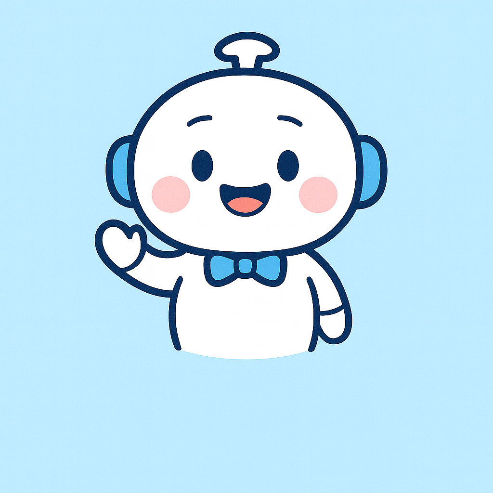

오늘

AI 상담봇
오후 3:12
안녕하세요 👋
서울시 120 다산콜센터 AI입니다.
도로, 대중교통, 쓰레기, 소음, 안전 신고 등
궁금하신 민원을 음성 또는 텍스트로 보내주세요.
서울시 120 다산콜센터 AI입니다.
도로, 대중교통, 쓰레기, 소음, 안전 신고 등
궁금하신 민원을 음성 또는 텍스트로 보내주세요.
나
오후 3:15
버스 정류장 가로등이 꺼져 있는데 신고하려면 어떻게 해야 하나요?
AI 상담봇
오후 3:15
위치와 상황을 알려주시면
가로등 담당 부서로 민원을 자동 접수해 드릴게요.
예시)
“강남역 3번 출구 앞 버스정류장 가로등이 꺼져 있습니다.”
가로등 담당 부서로 민원을 자동 접수해 드릴게요.
예시)
“강남역 3번 출구 앞 버스정류장 가로등이 꺼져 있습니다.”